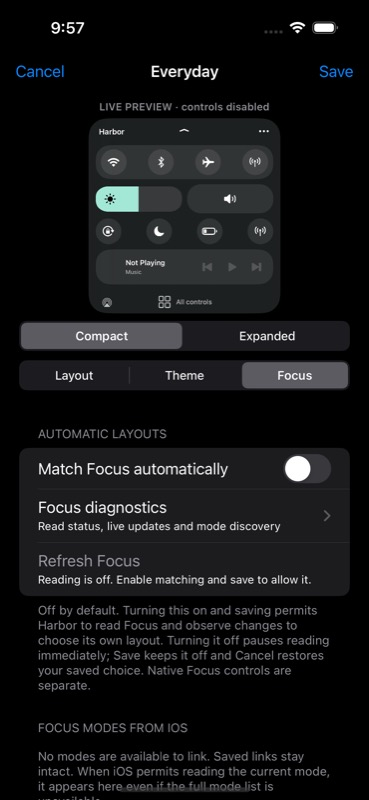

Harbor
Your controls. Your layout.
Beta 7 — device validation pending
Physical-device testing is pending. This full beta includes the compact sheet, live editor, themes, saved profiles and optional Focus matching. It has passed 141 simulator checks and 21 recorded touch-interaction assertions with simulated system services. Those checks do not establish behavior on your phone.
Targets iOS 17.0 in a RootHide environment with working SpringBoard injection, a compatible injection runtime, and PreferenceLoader. TrollStore alone is insufficient. No support for iOS 17.1 or later is claimed.
Compact, expandable, personal.
- A bottom sheet with circular connectivity controls, horizontal brightness and volume pills, shortcuts and a narrow music strip.
- Independent compact and expanded arrangements. Drag editor handles to reorder groups, show or hide them, and preview changes before saving.
- Four theme presets plus custom accent and surface colors, materials, shapes, opacity, radius and spacing.
- Up to 12 saved profiles with copy, rename, manual selection, reset and delete.
- Restrained animations, Reduce Motion and Transparency, Dynamic Type, VoiceOver and pinned All controls.

Focus matching is your choice.
Automatic matching is off by default. Manual profiles work without it. Beta 7 fixes the earlier reader-startup bug: Harbor starts no Focus reader when disabled. Legacy enabled flags and backup recovery cannot silently enable access.
To opt in, open the editor's Focus tab, turn on Match Focus automatically, then Save. An unsaved On draft does not start reading. Off pauses reading immediately; Save keeps it off, while Cancel restores your saved choice.
The adapter reads Focus to select Harbor's layout; it contains no system Focus activation or setting writes. The separate Focus controls shortcut opens Apple's chooser, where you can deliberately change a mode. An already-running read may finish after disabling, and an existing listener may need cleanup.
Real SpringBoard Focus integration remains unverified. Private APIs can fail, stall or change, and the ordinary simulator app is denied service access. Automatic matching can stay off indefinitely. Read the audit and test boundaries.

Controls and recovery.
Connectivity, Rotation Lock and Low Power buttons forward existing native control actions when available. Brightness, native volume, AirPlay and media controls remain accessible. Missing or unsupported controls hand off to Apple's UI.
Tap the chevron for expanded shortcuts. All controls stays outside the sheet's scroll area and restores native Control Center for the current visit. Close and reopen to return to Harbor. Landscape and iPad retain the native layout.
After updating
Refresh this source in Sileo and confirm 0.1.0~beta7. After installing, restart SpringBoard through your environment's supported UI and reopen Settings. Enable Settings injection if your environment requires it for PreferenceLoader. Settings → Harbor → Enable Harbor defaults on. Open Control Center with the usual downward swipe from the top-right, in portrait.
Tap the ellipsis → Edit layout & theme for customization. For manual selection: ellipsis → Saved profiles → a profile → Use as default.
If Harbor is absent, open Settings → Harbor → Refresh status. The report includes its build version and time; it describes the last recorded event. Confirm native recovery and the master switch before relying on Harbor.
Still needs phone testing
SpringBoard injection, real gestures and frame pacing, lock-screen access, hardware controls, media/AirPlay, native Focus presentation and interactions with other tweaks remain unverified on a physical phone. This is a development beta.
Disable Harbor in Settings, or uninstall through your RootHide package manager and restart SpringBoard using that environment's supported UI. If needed, use its established safe-mode or disable-tweak recovery procedure.